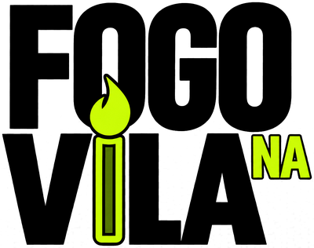

Ei!
Respira fundo.
Prepara o coração.
É hora de falar com Deus.
Toque para pular
12 dias de oração do Fogo na Vila no livro de Daniel. Pega seu horário e ora com a gente.
Ajude a manter a chama acesa
Jejum é abrir mão de algo por um tempo para buscar mais a Deus. Não é dieta nem algo para mostrar: é entre você e Ele (Mateus 6:16-18).
Bateu a fome ou a vontade? Use esse momento para orar. Aproveite para ler o capítulo do dia.
Nunca jejuou? Comece com poucas horas. Deus olha o coração, não o relógio.
No fim, toque em "Concluí". Só você vê o que escolheu.
Beba bastante água e respeite o seu corpo. Tem alguma condição de saúde? Converse com a liderança antes de começar.
O lembrete toca 10 minutos antes. Na hora, abra o app e toque em "Comecei a orar".
Seus horários ficam salvos neste celular. Em outro celular, recupere com seu nome e este código.
Que Deus te abençoe sempre. Obrigado por fazer parte deste propósito de jejum e oração. Cremos que o Senhor fará grandes coisas no Fogo na Vila!